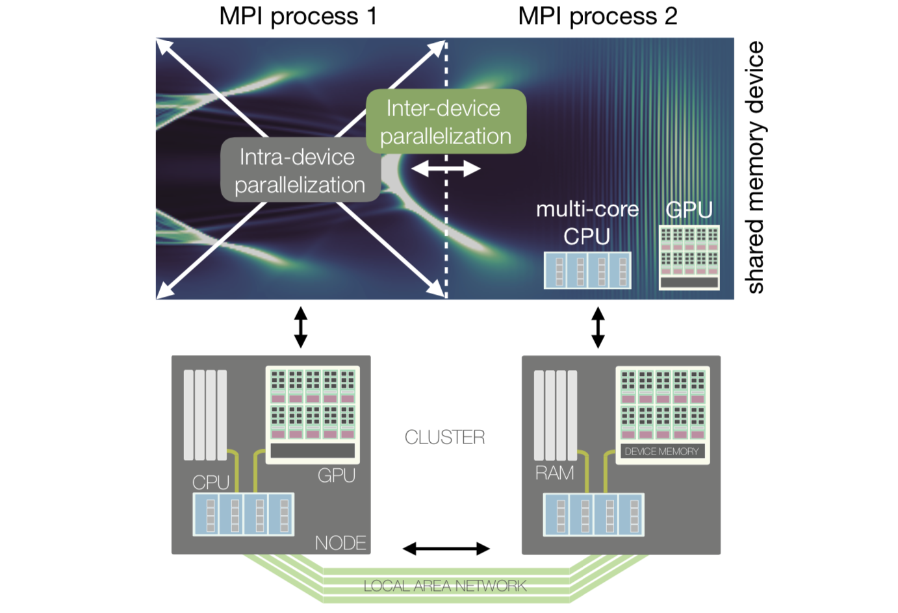
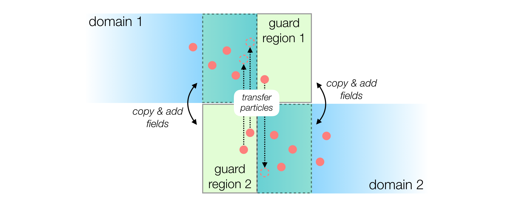

Parallelization of FBPIC¶
Two-level parallelization¶
PIC simulations are computationally demanding in terms of arithmetic operations and memory consumption. Therefore, simulations are typically parallelized across many compute units that share the computational work.
A common parallelization strategy is to spatially decompose the simulation box into multiple sub-domains (i.e. multiple chunks of space):

Each sub-domain can be treated by a separate computing device (e.g. a separate multi-core CPU or GPU). These devices exchange a minimal amount of information, at the boundary of the sub-domains, using the MPI protocol (inter-device parallelization).
Within each sub-domain, the multiple cores of a single computing device can work together on the same sub-domain, using their shared memory (intra-device parallelization).
The above image illustrates how these two levels of parallelism are mapped onto a modern HPC (High Performance Computing) architecture. Within one sub-domain, the multiple cores of a single computing device exchange large amounts of information via the (fast) shared memory (RAM for CPU, or device memory for GPU). Between sub-domains, the computing devices exchange a smaller amount of information via the (relatively slower) local area network.
Intra-device parallelization¶
A single computing device can consist of a multi-core CPU or a GPU. Within such a device, many computational cores can access the same memory. In this shared memory layout, the algorithmic PIC methods are executed on a single such device by many threads in parallel.
FBPIC can run either on CPUs or on NVIDIA GPUs. GPUs are well suited for the parallel execution of the PIC algorithm, as they can execute thousands of threads simultaneously. In contrast, only a few parallel threads run efficiently on a CPU - but each of them has a much higher performance than a single GPU thread. For typical simulation sizes and modern hardware, FBPIC is generally much faster on GPU than on CPU.
Note
When running on a CPU, the best performance is typically achieved by using only a single CPU socket, with the number of threads matching the number of physical cores per socket. In this case, the user is responsible for setting the correct number of threads (see How to run the code).
Important
FBPIC simulations are most efficient when using only the intra-device parallelization, i.e. executing on a single GPU or a single multi-core CPU.
This is because using inter-device parallelization instead comes with overheads (see next section). In general, using multiple GPUs/CPUs (with inter-device parallelization) is only advantageous if:
The simulation is so large that each PIC iteration takes more than a hundred milliseconds. (In this case, the inter-device overheads become negligible.)
The simulation is so large that it does not fit in the memory of a single computing device.
Note also that you can still use multiple GPUs/CPUs without inter-device parallelization, by running independent simulations in parallel: see Performing parameter scans in parallel.
Inter-device parallelization¶
As mentioned above, if the simulation is large enough, it can be advantageous to use multiple computing devices with inter-device parallelization. In this case, the simulation box is split into smaller chunks (sub-domains). Each computing device handles a separate sub-domain, and they exchange information on the fields and particles at the boundaries.
As shown in the image below, a guard region is used as a boundary layer to ensure that fields and particles propagate correctly from one domain to the other:
After each iteration, the updated electromagnetic fields of a local domain are copied to the neighboring guard region.
Similarly, the charge and current density are added between overlapping domains as if particles would reside in both domains simultaneously.
Particles are transferred to the neighboring domain in regular time intervals if they left the local domain.
Note that FBPIC implements spatial domain decomposition only in the longitudinal direction (i.e. the z axis).
Note
Communication between domains occurs via MPI (Message Passing Interface),
using the mpi4py package.
When running on GPUs, FBPIC should use one MPI process per GPU.
When running on CPUs, FBPIC should use one MPI process per CPU socket (and one thread per physical core in each socket, as mentioned above).
See the section How to run the code to learn how to launch a simulation
with MPI. You can also pass verbose_level=2 to the Simulation
object to check which CPU/GPU are used by FBPIC.
Warning
For standard simulation sizes, efficient scaling of the inter-node parallelization is typically limited to a few (~4-16) domains. Using too many domains will result in poor performance, as the size of a single domain becomes too small and/or the overhead of communication too large. Please also note that the performance achieved in practice can highly depend on the HPC architecture used.
Note that the inter-device parallelization strategy also comes with a trade-off. It requires locality of the simulated physics, with information propagating not farther than the guard region of a domain. This is ensured by using a tunable finite-order spectral solver for which the required guard region size is inversely proportional to the accuracy of the solver.
Finite-order spectral solver¶
As described in this section, the field solver of FBPIC integrates the Maxwell equations in the frequency domain as opposed to standard field solvers that use finite-differences to approximate the field evolution. These FDTD (Finite-Difference Time Domain) solvers are sometimes classified by their order of accuracy. In an FDTD solver, the order of accuracy determines the extent of the finite-difference stencil used in the Maxwell solver.
Following this notation, the default spectral solver of FBPIC is of infinite order with its stencil extending across the entire simulation grid. However, the accuracy of the spectral solver can be artificially reduced to a finite order, virtually limiting the extent of the stencil to a finite range of cells.
Applying the finite-order modification to FBPIC’s spectral solver brings the locality which is required to spatially decompose the simulation grid. The required size of the overlapping guard region between the individual smaller domains is then governed by the order (accuracy) of the solver.
Note
A lower order requires less guard cells between the domains, therefore
lowering the overhead from MPI communication. However, it will also decrease
the accuracy of the field solver. Similar to finite-difference solvers this
leads to a spurious numerical dispersion of the electromagnetic waves,
potentially causing a deterioration of the beam quality due to Numerical
Cherenkov Radiation (NCR). For common simulation cases of plasma
acceleration, we recommend using n_order=32 to get accurate results.
You can learn more about the finite order spectral solver and how to
identify NCR in a simulation in this article.
Warning
Although the finite-order spectral solver guarantees locality when advancing
the electromagnetic fields in time, this is not necessarily true for the
standard current correction (curl-free) of the PIC algorithm. However,
in practice, this will typically have no negative influence on the
simulation results. As an alternative, an effectively local current
correction (cross-deposition) can be selected - having the slight
disadvantage of not strictly preserving a linear laser polarization.